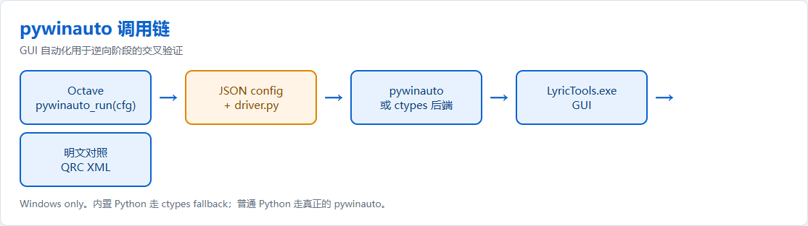
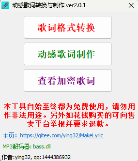
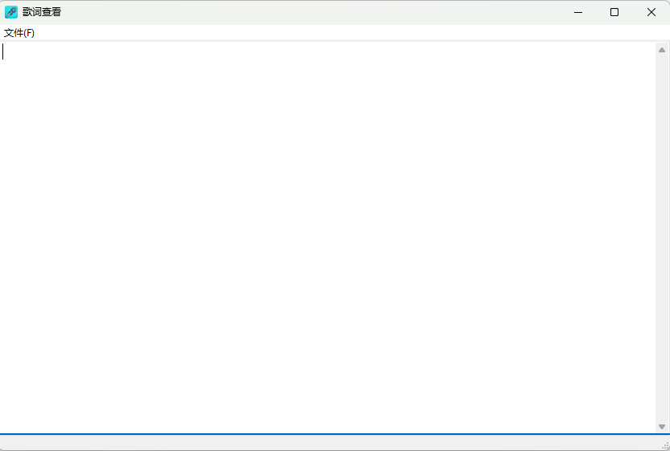
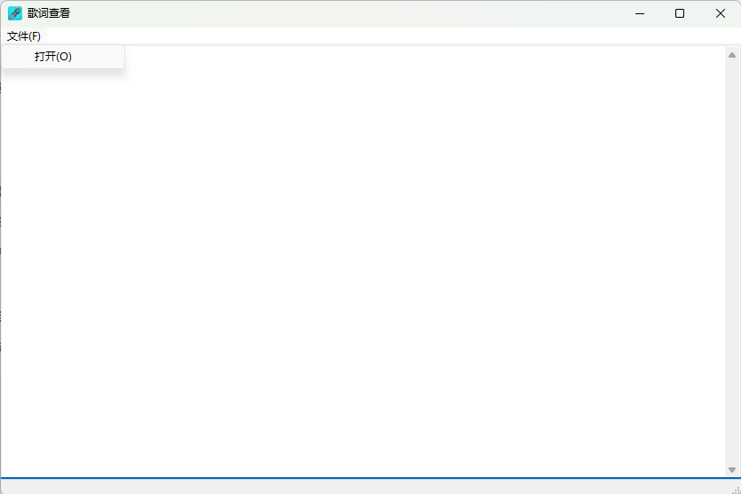
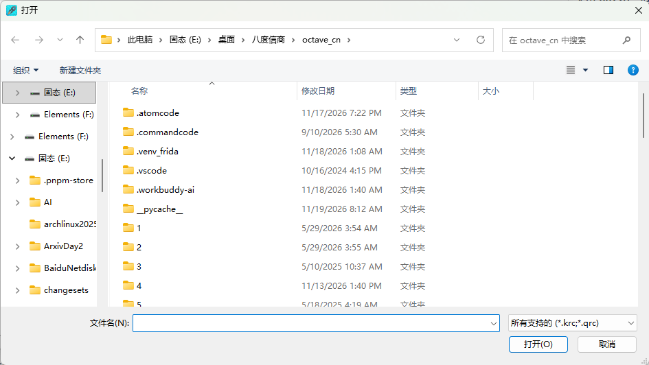
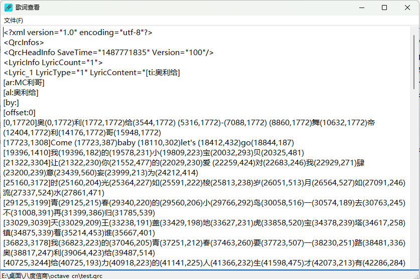
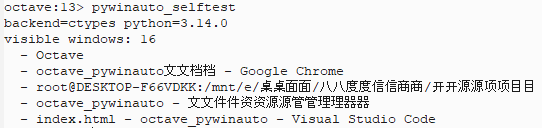
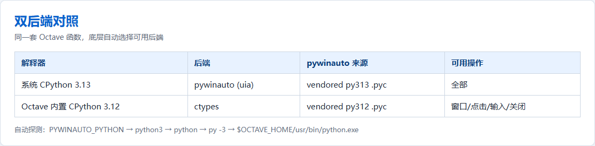
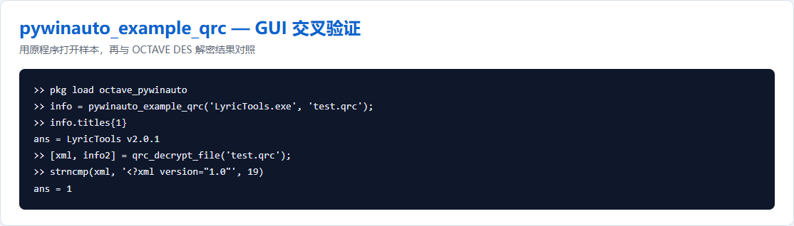

本包可通过 Octave 软件源安装：
>> pkg install -forge octave_pywinauto
>> pkg install 'https://github.com/CNOCTAVE/octave_pywinauto/releases/download/1.0.0/octave_pywinauto.tar.gz'
>> pkg install octave_pywinauto.tar.gz -local
>> pkg load octave_pywinauto
仅支持 Windows。vendor 目录含 py312/ 与 py313/ 两套 pywinauto 0.6.9 /
comtypes 1.5.0 / six 1.17.0 的 sourceless .pyc。
自动探测顺序：PYWINAUTO_PYTHON → python3 → python → py -3 → $OCTAVE_HOME/usr/bin/python.exe。使用内置 Python 时切换到 ctypes 后端，普通 Python + pywin32 时使用真正的 pywinauto 后端。
下列每个函数均按「调用方法 → 含义 → 示例」说明。使用前先执行 pkg load octave_pywinauto。带
[ ] 的参数可省略。
调用方法 ctx = pywinauto_init ()
含义 探测一个能加载 vendor 字节码的 Windows Python，返回上下文结构体
ctx。字段：python（解释器命令）、driver（Python
驱动路径）、backend（pywinauto 或 ctypes）、posix_paths（路径是否需转
POSIX）。Octave 内置 CPython 3.12 走 ctypes Win32 后端，普通 Windows Python + pywin32 走真正的 pywinauto
后端。结果会缓存，重复调用几乎无开销。找不到可用解释器时报错。
示例
>> ctx = pywinauto_init() >> ctx.backend ans = pywinauto >> ctx.python ans = python3
调用方法 pywinauto_version ()
含义 打印当前生效的后端名与 Python 版本，无返回值。用于确认初始化走了哪条路径。
示例
>> pywinauto_version() pywinauto backend=pywinauto python=3.13.14
调用方法 w = pywinauto_windows ()
含义 返回描述所有可见顶层窗口的结构体数组 w。字段：handle（HWND
句柄）、title（标题）、class（窗口类）、pid（进程 ID）、rect（左上右下坐标，仅
ctypes 后端提供）。可据此选择后续操作目标。
示例
>> w = pywinauto_windows()
>> numel(w)
ans = 11
>> {w(1:3).title}
ans =
1×3 cell array
{'…'} {'…'} {'…'}
调用方法 pid = pywinauto_start (exe) 或 pid = pywinauto_start (exe, args)
含义 启动 exe 进程并返回其 PID。args 可省略，为 cell
数组或单个字符串，作为命令行参数传给程序。启动失败时报错。
示例
>> pid = pywinauto_start('notepad.exe')
pid = 4288
>> pid = pywinauto_start('LyricTools.exe', {'test.qrc'});
调用方法 pid = pywinauto_connect (pid)
含义 连接到一个已运行的进程 ID，成功时返回该 PID。适用于窗口已经打开、只需后续操作的场景。
示例
>> pid = pywinauto_connect(4288) pid = 4288
调用方法 pywinauto_click (title, x, y) 或 pywinauto_click (handle)
含义 激活标题包含 title 的窗口，在窗口客户区坐标 (x, y) 处点击。若第一个参数是数值，则按
HWND 句柄定位窗口。x、y 同时省略时只激活窗口、不点击。无返回值。
示例
>> pywinauto_click('记事本', 100, 200)
>> pywinauto_click(w(1).handle) % 按句柄激活
调用方法 pywinauto_type_keys (text) 或 pywinauto_type_keys (text, title, set_text)
含义 把 text 发送给活动窗口；给定 title（字符串或数值句柄）时先激活对应窗口再发送。第三个参数
set_text 为 true 时，ctypes 后端直接设置窗口文本而非模拟逐键输入——对中文、特殊字符更可靠。默认
false。无返回值。
示例
>> pywinauto_type_keys('hello')
>> pywinauto_type_keys('你好', '记事本', true) % 直接设文本
调用方法 pywinauto_close (title) 或 pywinauto_close (handle)
含义 关闭标题包含 title 的窗口；传入数值时按 HWND 句柄关闭。无返回值。
示例
>> pywinauto_close('记事本')
>> pywinauto_close(w(1).handle)
调用方法 info = pywinauto_example_qrc (exe, qrc)
含义 以 qrc 为参数启动 exe（LyricTools.exe），等待 2 秒后对比前后窗口，返回结构体
info。字段：pid、exe、qrc、window_count、titles。这是用
GUI 解出明文、与 3DES 结果交叉验证的整段流程。
示例
>> info = pywinauto_example_qrc('LyricTools.exe', 'test.qrc')
>> info.pid
ans = 4288
>> info.window_count
ans = 1
调用方法 pywinauto_selftest ()
含义 打印生效后端与 Python 版本，并枚举可见窗口（最多列出前 5 个标题）。不执行点击、输入、关闭等动作，可在任意 Windows 环境安全运行。无返回值。
示例
>> pywinauto_selftest() backend=pywinauto python=3.13.14 visible windows: 11 - 程序管理器 - …
pywinauto_run (cfg) 执行单个
action（version/windows/start/connect/click/type_keys/close/texts），通过临时
JSON 与 Python 驱动通信；pywinauto_fwd (p) 把 Windows
路径的反斜杠转正斜杠；pywinauto_quote_python (py) 为解释器命令按需加引号；pywinauto_posix (p) 把盘符路径转成
MSYS2 POSIX 路径。公开函数已封装这些细节，通常直接使用上面的 1～10 即可。
LyricTools.exe 产生的 test.qrc 是一份本地加密歌词文件。经逆向与实测，完整链路如下：
11 字节 magic 98 25 b0 ac e3 02 83 68 e8 fc 6c
→ 256 字节 XOR 前置混淆（表位于 exe 偏移 0x2e33d0，索引 (i²+22i+148)&255）
→ 私有位序 3DES-ECB 解密（24 字节密钥 !@#)(*$%123ZXC!@!@#)(NHL）
→ zlib inflate → UTF-8 XML。
样本文件：test.qrc 共 3603 字节，去掉 magic 后 body 为 3592 字节（8 字节对齐）；解密后 XML 为 7084
字节，以 <?xml version="1.0" encoding="utf-8"?><QrcInfos> 开头。

这一节用真实截图走一遍「用 LyricTools.exe 解密 test.qrc」的完整 GUI 操作，并给出对应的 Octave 调用。以下截图都是在本机实际启动
LyricTools.exe（动感歌词转换与制作 ver2.0.1）逐步操作抓拍的，不是示意图。
程序主界面有三个按钮：歌词格式转换、动感歌词制作、查看加密歌词。解密要走第三个。Octave 侧用 pywinauto_start 启动，或直接带
qrc 参数启动。
>> exe = 'E:/桌面/八度信商/octave_cn/LyricTools.exe'; >> pid = pywinauto_start(exe); % 启动主窗口

点击「查看加密歌词」按钮，弹出标题为「歌词查看」的窗口，初始为空白文本区，带一个「文件(F)」菜单。用 pywinauto_click
按标题激活窗口并点击；点击坐标是窗口客户区相对坐标。
>> pywinauto_click('动感歌词转换与制作', 161, 178); % 查看加密歌词按钮
>> w = pywinauto_windows(); % 出现「歌词查看」窗口

点「歌词查看」窗口左上角的「文件(F)」菜单，下拉只有一项「打开(O)」。这一步是纯 GUI 路径，用键盘 Alt+F 或坐标点击均可。

点「打开(O)」弹出标准文件对话框，过滤器为 *krc;*.qrc。定位到 octave_cn 目录，在文件名框填
test.qrc，点「打开」。至此 GUI 侧完成了「读取加密文件」的动作——正是 Frida hook 里 CreateFileW /
ReadFile 捕捉到的那一步。

程序自动完成 XOR + 3DES + zlib 解密，在文本区显示 XML 明文：开头
<?xml version="1.0" encoding="utf-8"?><QrcInfos>，含
[ti:奥利给]、[ar:MC利哥] 与时间轴歌词。状态栏显示文件路径。这就是 exe 自己解出的明文，可用来验证
qrc_decrypt_file() 的 3DES 结果逐字节一致。
>> [xml, info] = qrc_decrypt_file('test.qrc');
>> strncmp(xml, '<?xml version="1.0"', 19)
ans = 1
>> pywinauto_close('歌词查看');

说明：上面 5 张是真实桌面抓图，因此保留了程序原生的窗口外观（含菜单、状态栏）；而文档前几节的终端类截图是用 Octave 输出渲染的卡片图。两种都对应本机实跑结果。
>> pkg load octave_pywinauto
>> pywinauto_selftest()
backend=pywinauto python=3.13.14
visible windows: 11
>> info = pywinauto_example_qrc('LyricTools.exe', 'test.qrc');
这一步得到 exe 自己解出的明文，用来和上一步 3DES 结果逐字节对照，确认 XOR 表与索引公式没有偏差。


